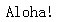
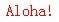

关于 ':hover' 伪类
':hover' 伪类：适用于用户指向一个元素，但还没有激活它的时候，既鼠标悬停状态，如鼠标移到元素范围区域上，它可以应用到所有元素，不只是 A 元素。
关于 ':hover' 伪类的详细信息，请参考 CSS2.1 规范 5.11.3 The dynamic pseudo-classes: :hover, :active, and :focus 中的内容。
IE6 IE7(Q) IE8(Q) 不支持 A 元素以外的其他元素的 ':hover' 伪类。
在非 A 元素上使用了 ':hover' 伪类后，可能会使页面在 IE6 IE7(Q) IE8(Q) 中没有的任何效果。
| IE6 IE7(Q) IE8(Q) |
|---|
对于此问题，我们通过以下的测试用例来说明。
分析以下代码：
<style type="text/css"> p:hover { color: red; }
</style> <p>Aloha!</p>
根据 CSS2.1 规范中的描述可知，当鼠标悬停在 P 元素上时，P 中的字体会变成红色。
这段代码在不同的浏览器环境中的表现（鼠标悬停在 'Aloha!' 上的时候）：
| IE6 IE7(Q) IE8(Q) | IE7(S) IE8(S) Firefox Opera Safari Chrome |
|---|---|
|  |  |
所以对于 ':hover' 伪类的支持情况，如下表：1
| IE6 | IE7(Q) | IE7(S) | IE8(Q) | IE8(S) | Firefox | Safari | Opera | Chrome |
|---|---|---|---|---|---|---|---|---|
| N | N | Y | N | Y | Y | Y | Y | Y |
注1：实际中其他除常用 HTML 标记（A 标记除外）同样适用此例，并非仅 P 标记自身不支持。
使用 JavaScript 绑定 'onmouseover' 和 'onmouseout'（模仿 ':hover'）；
使用 Whatever:hover，该组件利用 IE 特有的 CSS
行为（behavior）及通过 JavaScript 来模拟 ':hover' 伪类的效果。
| 操作系统版本: | Windows 7 Ultimate build 7600 |
|---|---|
| 浏览器版本: |
IE6
IE7 IE8 Firefox 3.6.3 Chrome 6.0.437.3 dev Safari 5.0 Opera 10.54 |
| 测试页面: | hover.html |
| 本文更新时间: | 2010-07-08 |
hover Pseudo class